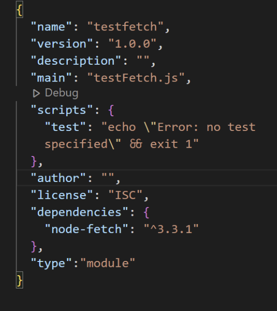

2. Installing packages and dependencies
What is a Package?
A package in Node.js contains all the files you need for a module. And the modules are JavaScript libraries you can include in your project. If you are develop student or begginer developer, you should keep in mind that having the latest version of the package should be the first step you need to take.
What is a Dependency?
It is a connection between two different modules. It is downloaded from installing npm, and dependencies and devDependencies are listed in the package.json.
Why do I install
When you do your project, the very first step you should take is installing package.json.
The package.json file is a repository of descriptive and functional metadata pertaining to a project, including details like its name, version, and required dependencies. This information enables the npm package manager to efficiently manage the project's dependencies and accurately identify it.
Especially when you are working on a team project, you are better to have the latest version of package.json.
Running npm install will immediately install all the necessary dependencies dependencies for your project.
It is very important to do your project however it is very simple command to do it.
Command
1. First, run the following command:
If you run this command, it will ask you some questions and you answer them to move on to the next command.
2. Then, run the following command:
Once you have finished those commands, you should have package.json and node_modules installed. Then, open the package.json and add a line "type: module" like the following:
